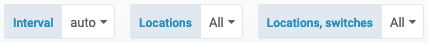
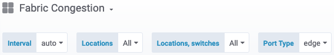
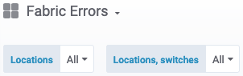
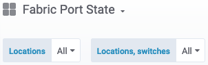
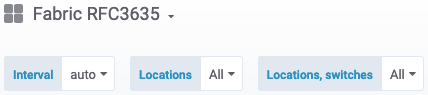

The SAT Grafana Dashboards display messages that are generated by the HSN (High Speed Network) and reported through Redfish. The messages are displayed based on severity.
Grafana can be accessed via web browser at the following URL:
https://sma-grafana.cmn.<site-domain>The value of site-domain can be obtained as follows:
ncn-m001:~ # kubectl get secret site-init -n loftsman -o jsonpath='{.data.customizations\.yaml}' | \
base64 -d | grep "external:"
That command will produce the following output, for example:
external: EXAMPLE_DOMAIN.com
This would result in the address for Grafana being https://sma-grafana.cmn.EXAMPLE_DOMAIN.com
For more information on accessing the Grafana Dashboards, refer to Access the Grafana Monitoring UI in the SMA product documentation.
For more information on the interpretation of metrics for the SAT Grafana Dashboards, refer to “Fabric Telemetry Kafka Topics” in the SMA product documentation.
There are four Fabric Telemetry dashboards used in SAT that report on the HSN. Two contain chart panels and two display telemetry in a tabular format.
| Dashboard Name | Display Type |
|---|---|
| Fabric Congestion | Chart Panels |
| Fabric RFC3635 | Chart Panels |
| Fabric Errors | Tabular Format |
| Fabric Port State | Tabular Format |
The tabular format presents a single point of telemetry for a given location and metric, either because the telemetry is not numerical or that it changes infrequently. The value shown is the most recently reported value for that location during the time range selected, if any. The interval setting is not used for tabular dashboards.
Shows the Interval and Locations Options for the available telemetry.

The value of the Interval option sets the time resolution of the received telemetry. This works a bit like a histogram, with the available telemetry in an interval of time going into a “bucket” and averaging out to a single point on the chart or table. The special value auto will choose an interval based on the time range selected.
For more information, refer to Grafana Templates and Variables.
The Locations option allows restriction of the telemetry shown by locations, either individual links or all links in a switch. The selection presented updates dynamically according to time range, except for the errors dashboard, which always has entries for all links and switches, although the errors shown are restricted to the selected time range.
The chart panels for the RFC3635 and Congestion dashboards allow selection of a single location from the chart’s legend or the trace on the chart.

SAT Grafana Dashboards provide system administrators a way to view fabric telemetry data across all Rosetta switches in the system and assess the past and present health of the high-speed network. It also allows the ability to drill down to view data for specific ports on specific switches.
This dashboard contains the variable, Port Type not found in the other dashboards. The possible values are edge, local, and global and correspond to the link’s relationship to the network topology. The locations presented in the panels are restricted to the values (any combination, defaults to “all”) selected.
The metric values for links of a given port type are similar in value to each other but very distinct from the values of other types. If the values for different port types are all plotted together, the values for links with lower values are indistinguishable from zero when plotted.
The port type of a link is reported as a port state “subtype” event when defined at port initialization.

This dashboard reports error counters in a tabular format in three panels.
There is no Interval option because this parameter is not used to set a coarseness of the data. Only a single value is presented that displays the most recent value in the time range.
Unlike other dashboards, the locations presented are all locations in the system rather than having telemetry within the time range selected. However, the values are taken from telemetry within the time range.

There is no Interval option because this parameter is not used to set a coarseness of the data. Only a single value is presented that displays the most recent value in the time range.
The Fabric Port State telemetry is distinct because it typically is not numeric. It also updates infrequently, so a long time range may be necessary to obtain any values. Port State is refreshed daily, so a time range of 24 hours results in all states for all links in the system being shown.
The three columns named, group, switch, and port are not port state events, but extra information included with all port state events.

For more information on performance counters, refer to Definitions of Managed Objects for the Ethernet-like Interface Types, an Internet standards document.
Because these metrics are counters that only increase over time, the values plotted are the change in the counter’s value over the interval setting.